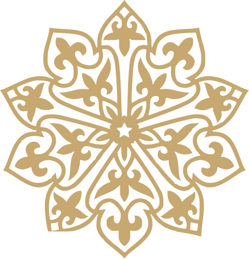

10 · 10 · 2026

Құрметті
қонақтар!
Сіздерді Мейіржан мен Тоғжанның шаңырақ көтеруіне арналған салтанатты тойымыздың қадірлі қонағы болуға шақырамыз.
Мейіржан&Тоғжан
Шаңырақ көтеру тойы
Күні
10 қазан, 2026Сенбі
Уақыты
Сағат 18:00
Мекенжайы
«Тамаша» мейрамханасыАстана қаласы,
Оңтүстік-Шығыс ықшамауданы,
Шарбақты көшесі, 40